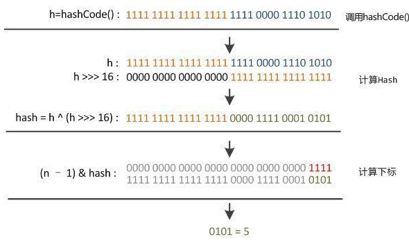
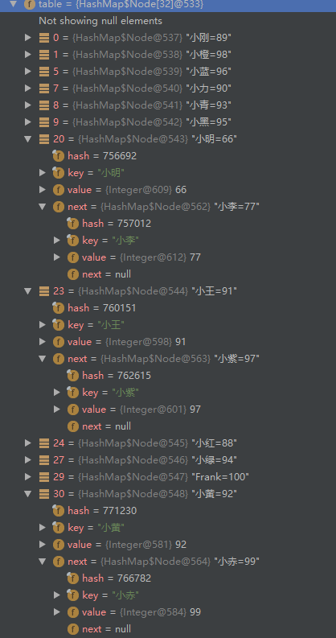
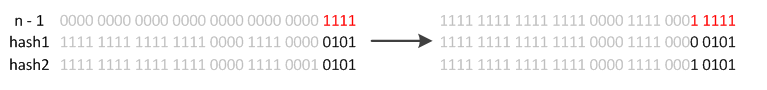

上一篇中对HashMap中的基本内容做了详细的介绍，解析了其中的get和put方法，想必大家对于HashMap也有了更好的认识，本篇将从了算法的角度，来分析HashMap中的那些函数。
HashCode
先来说说HashMap中HashCode的算法，在上一篇里，我们看到了HashMap中的put方法是这样的：
public V put(K key, V value) {
return putVal(hash(key), key, value, false, true);
}那这个hash函数又是什么呢？让我们来看看它的真面目：
/**
* 将高位与低位进行与运算来计算哈希值。因为在hashmap中使用2的整数幂来作为掩码，所以只在当前掩码之上的位上发生
* 变化的散列总是会发生冲突。（在已知的例子中，Float键的集合在小表中保持连续的整数）因此，我们应用一个位运算
* 来向下转移高位的影响。 这是在综合考虑了运算速度，效用和质量之后的权衡。因为许多常见的散列集合已经合理分布
* （所以不能从扩散中受益），并且因为我们使用树来处理bin中发生的大量碰撞的情况，所以我们尽可能以代价最低的方式
* 对一些位移进行异或运算以减少系统损失， 以及合并由于hashmap容量边界而不会被用于散列运算的最高位的影响。
*
* todo 扰动函数
*/
static final int hash(Object key) {
int h;
return (key == null) ? 0 : (h = key.hashCode()) ^ (h >>> 16);
}可以看出，这里并不是简单的使用了key的hashCode，而是将它的高16位与低16位做了一个异或操作。（“>>>”是无符号右移的意思，即右移的时候左边空出的部分用0填充）这是一个扰动函数，具体效果后面会说明。接下来再看看之前的putval方法：
1 final V putVal(int hash, K key, V value, boolean onlyIfAbsent,
2 boolean evict) {
3 Node<K,V>[] tab; Node<K,V> p; int n, i;
4 //如果当前table未初始化，则先重新调整大小至初始容量
5 if ((tab = table) == null || (n = tab.length) == 0)
6 n = (tab = resize()).length;
7 //（n-1）& hash 这个地方即根据hash求序号，想了解更多散列相关内容可以查看下一篇
8 if ((p = tab[i = (n - 1) & hash]) == null)
9 //不存在，则新建节点
10 tab[i] = newNode(hash, key, value, null);
11 else {
12 Node<K,V> e; K k;
13 //先找到对应的node
14 if (p.hash == hash &&
15 ((k = p.key) == key || (key != null && key.equals(k))))
16 e = p;
17 else if (p instanceof TreeNode)
18 //如果是树节点，则调用相应的putVal方法，这部分放在第三篇内容里
19 //todo putTreeVal
20 e = ((TreeNode<K,V>)p).putTreeVal(this, tab, hash, key, value);
21 else {
22 //如果是链表则之间遍历查找
23 for (int binCount = 0; ; ++binCount) {
24 if ((e = p.next) == null) {
25 //如果没有找到则在该链表新建一个节点挂在最后
26 p.next = newNode(hash, key, value, null);
27 if (binCount >= TREEIFY_THRESHOLD - 1) // -1 for 1st
28 //如果链表长度达到树化的最大长度，则进行树化，该函数内容也放在第三篇
29 //todo treeifyBin
30 treeifyBin(tab, hash);
31 break;
32 }
33 if (e.hash == hash &&
34 ((k = e.key) == key || (key != null && key.equals(k))))
35 break;
36 p = e;
37 }
38 }
39 //如果已存在该key的映射，则将值进行替换
40 if (e != null) { // existing mapping for key
41 V oldValue = e.value;
42 if (!onlyIfAbsent || oldValue == null)
43 e.value = value;
44 afterNodeAccess(e);
45 return oldValue;
46 }
47 }
48 //修改次数加一
49 ++modCount;
50 if (++size > threshold)
51 resize();
52 afterNodeInsertion(evict);
53 return null;
54 }注意看第八行的代码：
tab[i = (n - 1) & hash](n - 1) & hash 即通过key的hash值来取对应的数组下标，并非是对table的size进行取余操作。
那么，为什么要这样做呢？首先，扰动函数的目的就是为了扩大高位的影响，使得计算出来的数值包含了高 16 位和第 16 位的特性，让 hash 值更加深不可测来降低碰撞的概率。从hash方法的注释中，我们也可以找到答案，一般的散列，其实都是做取余处理，但是HashMap中的table大小是2的整数次幂，也就是说，肯定不是质数，那么在取余的时候，偶数的映射范围势必就要小了一半，这样效果显然就差很多，而且，除法和取余其实是很慢的操作，所以在JDK8中，使用了一种很巧妙的方式来进行散列。首先，table的大小size设置成了2的整数次幂，这样使用size-1就变成了掩码，下面是我找的一张图，能很好的解释这个过程：

n是table的大小，默认是16，二进制即为10000，n - 1 对应的二进制则为1111，这样再与hash值做“与”操作时，就变成了掩码，除了最后四位全部被置为0，而最后四位的范围肯定会落在（0~n-1）之间，正好是数组的大小范围，散列函数的妙处就在于此了。简直不能更稳，一波操作猛如虎。
那么我们继续上一篇的栗子，我们来一步一步分析一下，小明和小李的hash值的映射过程：

小明的hash值是756692，转换为二进制为10111000101111010100，table的大小是32，n-1=31，对应的二进制为：11111，做“与”运算之后，得到的结果是10100，即为20。
小李的hash值是757012，转换为二进制为10111000110100010100，与11111做与运算后，得到的结果也是10100，即20，于是就与小明发生了冲突，但还是要先来后到，于是小李就挂在了小明后面。
散列函数看完了，我们接下来再看看扩容函数。
扩容函数
扩容函数其实之前也已经见过了，就在上面的putVal方法里，往上面翻一翻，第六行可以看到resize函数，这就是扩容函数，让我们来看看它的庐山真面目：
1 /**
2 * 初始化或将table的大小进行扩容。 如果table为null，则按照字段threshold中的初始容量目标进行分配。
3 * 否则，因为我们使用2次幂进行扩容，所以在新表中，来自每个bin中的元素必须保持在相同的索引处，或者以原偏移量的2次幂进行移动。
4 */
5 final Node<K,V>[] resize() {
6 Node<K,V>[] oldTab = table;
7 int oldCap = (oldTab == null) ? 0 : oldTab.length;
8 int oldThr = threshold;
9 int newCap, newThr = 0;
10 if (oldCap > 0) {
11 if (oldCap >= MAXIMUM_CAPACITY) {
12 threshold = Integer.MAX_VALUE;
13 return oldTab;
14 }
15 //新的容量扩展成原来的两倍
16 else if ((newCap = oldCap << 1) < MAXIMUM_CAPACITY &&
17 oldCap >= DEFAULT_INITIAL_CAPACITY)
18 //阈值也调整为原来的两倍
19 newThr = oldThr << 1; // double threshold
20 }
21 else if (oldThr > 0) // initial capacity was placed in threshold
22 newCap = oldThr;
23 else { // zero initial threshold signifies using defaults
24 newCap = DEFAULT_INITIAL_CAPACITY;
25 newThr = (int)(DEFAULT_LOAD_FACTOR * DEFAULT_INITIAL_CAPACITY);
26 }
27 if (newThr == 0) {
28 float ft = (float)newCap * loadFactor;
29 newThr = (newCap < MAXIMUM_CAPACITY && ft < (float)MAXIMUM_CAPACITY ?
30 (int)ft : Integer.MAX_VALUE);
31 }
32 threshold = newThr;
33 @SuppressWarnings({"rawtypes","unchecked"})
34 Node<K,V>[] newTab = (Node<K,V>[])new Node[newCap];
35 table = newTab;
36 //将旧数组中的node重新散列到新数组中
37 if (oldTab != null) {
38 for (int j = 0; j < oldCap; ++j) {
39 Node<K,V> e;
40 if ((e = oldTab[j]) != null) {
41 oldTab[j] = null;
42 if (e.next == null)
43 newTab[e.hash & (newCap - 1)] = e;
44 else if (e instanceof TreeNode)
45 ((TreeNode<K,V>)e).split(this, newTab, j, oldCap);
46 else { // preserve order
47 Node<K,V> loHead = null, loTail = null;
48 Node<K,V> hiHead = null, hiTail = null;
49 Node<K,V> next;
50 do {
51 next = e.next;
52 if ((e.hash & oldCap) == 0) {
53 if (loTail == null)
54 loHead = e;
55 else
56 loTail.next = e;
57 loTail = e;
58 }
59 else {
60 if (hiTail == null)
61 hiHead = e;
62 else
63 hiTail.next = e;
64 hiTail = e;
65 }
66 } while ((e = next) != null);
67 if (loTail != null) {
68 loTail.next = null;
69 newTab[j] = loHead;
70 }
71 if (hiTail != null) {
72 hiTail.next = null;
73 newTab[j + oldCap] = hiHead;
74 }
75 }
76 }
77 }
78 }
79 return newTab;
80 }这里可以看到，如果原来的table还未被初始化的话，调用该函数后就会被扩容到默认大小（16），上一篇中也已经说过，HashMap也是使用了懒加载的方式，在构造函数中并没有初始化table，而是在延迟到了第一次插入元素之后。
当使用put插入元素的时候，如果发现目前的bins占用程度已经超过了Load Factor所设置的比例，那么就会发生resize，简单来说就是把原来的容量和阈值都调整为原来的2倍，之后重新计算index，把节点再放到新的bin中。因为index值的计算与table数组的大小有关，所以扩容后，元素的位置有可能会调整：

以上图为例，如果对应的hash值第五位是0，那么做与操作后，得到的序号不会变，那么它的位置就不会改变，相反，如果是1，那么它的新序号就会变成原来的序号+16,。
好像也不是很多嘛，嗯，算法部分就先介绍到这里了，之后的一篇再来说说HashMap中的EntrySet，KeySet和values（如果时间够的话顺便把迭代器也说一说）。